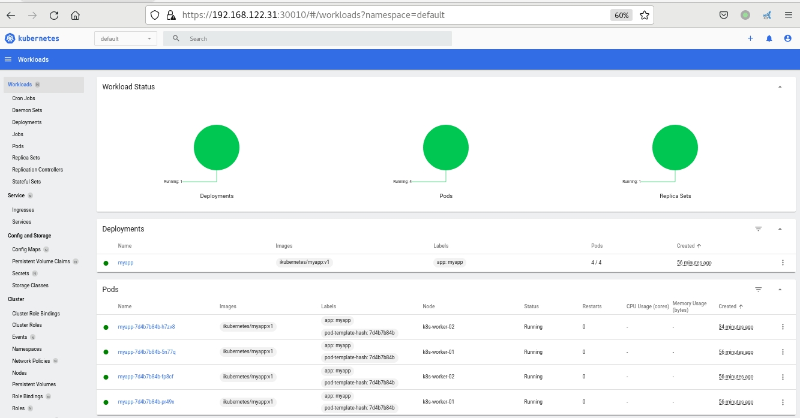
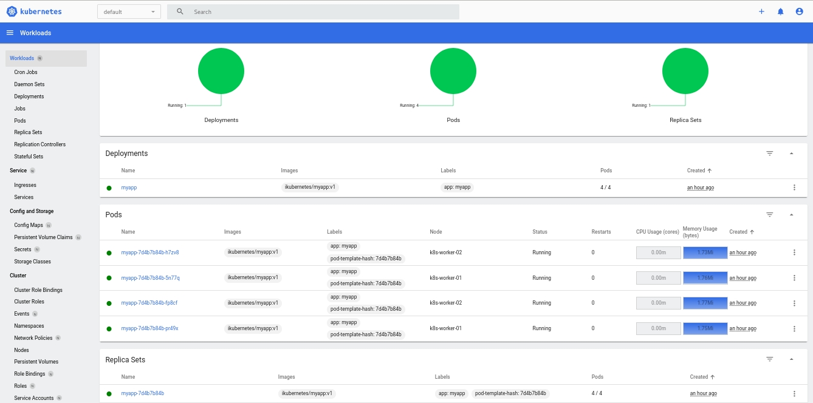
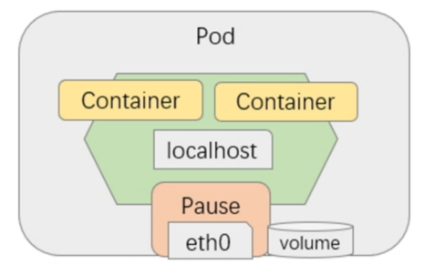
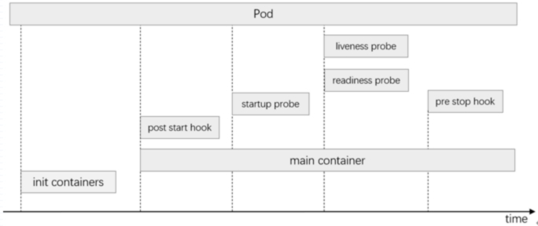
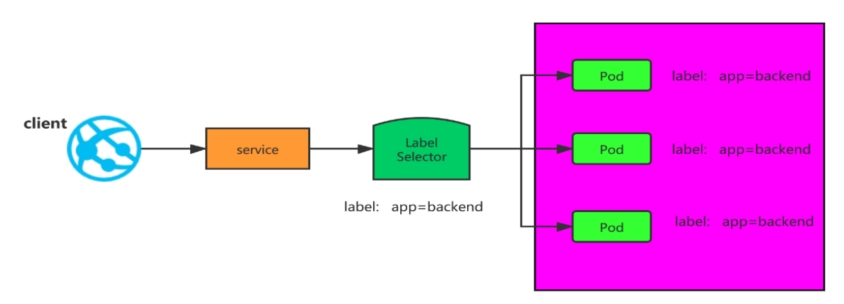
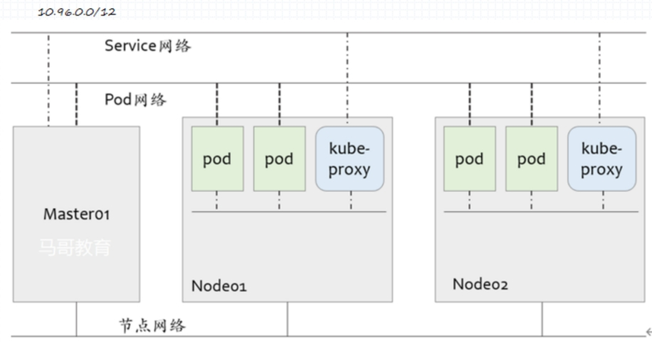
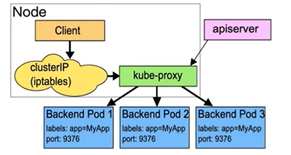
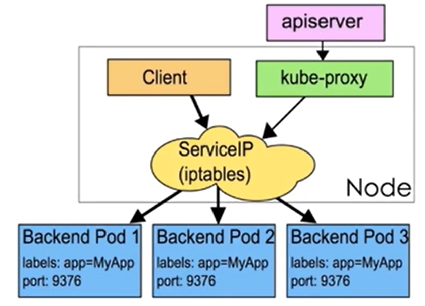
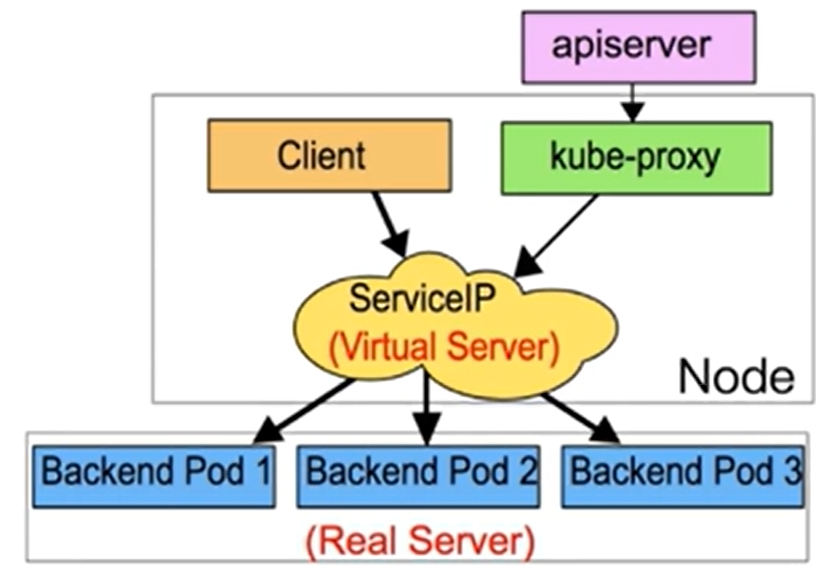

kubernetes介绍
Kubernetes（也称 “k8s” 或 “kube”）是一个容器编排平台，用于调度和自动部署、管理和扩展容器化应用程序。
Kubernetes 最初由谷歌开发，并在 2014 年开源发布。它是 Google 内部使用的容器编排平台 Borg 的后代。Kubernetes 在希腊语中是舵手或飞行员的意思，在 Kubernetes 徽标（链接位于 ibm.com 外部）中以船舵为象征。

kubernetes架构
官网
https://kubernetes.io/zh-cn/docs/concepts/overview/components/

一个正常运行的 Kubernetes 集群由多个节点组成，这些节点包括控制平面组件(Control Plane Components)和工作节点（Worker），其中控制平面是集群的管理中心，用于管理集群中的工作节点和 Pod。 woker节点负责维护运行的 Pod 并提供 Kubernetes 运行环境。
kubelet 在生产环境中，控制平面通常跨多台计算机运行，一个集群通常运行多个节点，提供容错性和高可用性。
控制平面组件 Control Plane Components
kube-apiserver：用于暴露 Kubernetes API 。人格得资源请求/调度等操作都是通过 kube-apiserver 提供的接口运行
kube-controller-manager：控制器管理器，用于对各种控制器进行控制，他们是就请你中处理常规任务得后台线程
kube-scheduler：监控新创建没有分配到 Worker节点的Pod，为一个Pod选择一个合适的节点运行
etcd： Kubernetes默认的存储系统。用于保存集群状态的所有数据
Worker 组件
kubelet：负责维护容器的声明周期（创建、销毁 Pod），同时也负责存储卷Volumn（CVI）和网络（CNI）等信息
kube-proxy
通过生成 iptables/ipvs 规则实现 Service 规则
随时与 kube-apiserver 进行通信，将 Service 规则提交给 apiserver 保存到etcd中
容器运行时（Container Runtime）
负责镜像管理已经Pod中容器的真正运行
Kubernetes 支持许多容器运行环境，例如 containerd、 CRI-O 以及 Kubernetes CRI (容器运行环境接口) 的其他任何实现。 插件（Addons）
插件 Addons
DNS
coredns： 负责为整个集群提供DNS服务
Web UI (Dashboard)： 提供图形化UI
Container Resource Monitoring: 提供集群资源监控
Heapster
Metries-server
Cluster-level Logging：提供日志采集、存储和检索
EFK
Network Plugins：负责为 Pod 分配 IP 地址，并使这些 Pod 能在集群内部相互通信
flannel
calico
canal
Kubernetes部署
官网 ：
https://kubernetes.io/zh-cn/docs/tasks/tools/
使用Kubadm快速部署v1.22.6集群
使用 kubeadm 快速部署Kubernetes集群。操作系统为CentOS 7.6.1810 X86_64，用到的各相关程序版本如下：
kubernetes： v1.22.6
docker：20.10.9
calico: 3.21
| 主机名 | IP | 配置 |
|---|---|---|
| k8s-master-01 | 192.168.122.21 | 4c8g/120G |
| k8s-worker-01 | 192.168.122.31 | 4c8g/120G |
| k8s-worker-02 | 192.168.122.32 | 4c8g/120G |
| k8s-worker-03 | 192.168.122.33 | 4c8g/120G |
准备环境
1.主机名hosts文件解析
cat >> /etc/hosts <<EOF
192.168.122.21 k8s-master-01
192.168.122.31 k8s-worker-01
192.168.122.32 k8s-worker-02
192.168.122.33 k8s-worker-03
# 用来扩展集群为高可用集群
192.168.122.21 kubeadm-vip.linux.io
EOF
2.主机安全设置
# 关闭防火墙
systemctl stop firewalld && systemctl disable firewalld
# 关闭selinux
sed -i 's@SELINUX=enforcing@SELINUX=disabled@g' /etc/selinux/config && setenforce 0
# 关闭swap分区
swapoff -a
sed -ri 's/.*swap.*/#&/' /etc/fstab
# 时间同步
crontab -e
*/3 * * * * /usr/sbin/ntpdate time1.aliyun.com &> /dev/null
3.升级系统内核
# 载入公钥
rpm --import https://www.elrepo.org/RPM-GPG-KEY-elrepo.org
# 安装ELRepo
rpm -Uvh http://www.elrepo.org/elrepo-release-7.0-3.el7.elrepo.noarch.rpm
# 载入elrepo-kernel元数据
yum --disablerepo=\* --enablerepo=elrepo-kernel repolist
# 查看可用的rpm包
yum --disablerepo=\* --enablerepo=elrepo-kernel list kernel*
# 安装长期稳定版本的kernel
yum --disablerepo=\* --enablerepo=elrepo-kernel install -y kernel-lt.x86_64
# 删除旧版本工具包
yum remove kernel-tools-libs.x86_64 kernel-tools.x86_64 -y
# 安装新版本工具包
yum --disablerepo=\* --enablerepo=elrepo-kernel install -y kernel-lt-tools.x86_64
#查看默认启动顺序
awk -F\' '$1=="menuentry " {print $2}' /etc/grub2.cfg
CentOS Linux (5.4.275-1.el7.elrepo.x86_64) 7 (Core)
CentOS Linux (3.10.0-1160.71.1.el7.x86_64) 7 (Core)
CentOS Linux (0-rescue-fe1fcab895344bfebaa751220353344b) 7 (Core)
#默认启动的顺序是从0开始，新内核是从头插入（目前位置在0，而4.4.4的是在1），所以需要选择0。
grub2-set-default 0
# 重新生成grub2引导文件
grub2-mkconfig -o /boot/grub2/grub.cfg
#重启并检查， 也可以后面配置完在重启
reboot
4.配置内核转发以网桥过滤
# 添加内核配置
cat > /etc/sysctl.d/k8s.conf <<EOF
net.bridge.bridge-nf-call-iptables = 1
net.ipv4.ip_forward = 1
net.bridge.bridge-nf-call-ip6tables = 1
user.max_user_namespaces=28633
vm.swappiness=0
EOF
sysctl --system
# 加载 br_netfilter 模块
modprobe br_netfilter
# 检查
lsmod |grep br_netfilter
br_netfilter 22256 0
bridge 155432 1 br_netfilter
5.安装 ipset 和 ipvsadm
yum install ipvsadm ipset -y
6.配置ipvsadm 模块加载
cat > /etc/sysconfig/modules/ipvs.modules << EOF
modprobe ip_vs
modprobe ip_vs_rr
modprobe ip_vs_wrr
modprobe ip_vs_sh
modprobe nf_conntrack
EOF
chmod 755 /etc/sysconfig/modules/ipvs.modules && bash /etc/sysconfig/modules/ipvs.modules
# 验证
lsmod | grep -e "ip_vs"
ip_vs_sh 12288 0
ip_vs_wrr 12288 0
ip_vs_rr 12288 0
ip_vs 200704 6 ip_vs_rr,ip_vs_sh,ip_vs_wrr
nf_conntrack 188416 1 ip_vs
nf_defrag_ipv6 24576 2 nf_conntrack,ip_vs
libcrc32c 12288 3 nf_conntrack,xfs,ip_vs
# 重启系统
reboot
安装容器运行时
1.安装docker
# 安装必要的一些系统工具
yum install -y yum-utils device-mapper-persistent-data lvm2
# 添加软件源信息
yum-config-manager --add-repo https://mirrors.aliyun.com/docker-ce/linux/centos/docker-ce.repo
# Step 3
sed -i 's+download.docker.com+mirrors.aliyun.com/docker-ce+' /etc/yum.repos.d/docker-ce.repo
# 更新并安装Docker-CE
yum makecache fast
yum list docker-ce.x86_64 --showduplicates | sort -r
# 安装指定版本的docker
yum install -y docker-ce-20.10.9
systemctl enable docker --now
2.配置docker加速器和cgroup方式
cat > /etc/docker/daemon.json <<EOF
{
"registry-mirrors": ["https://o4uba187.mirror.aliyuncs.com"],
"exec-opts": ["native.cgroupdriver=systemd"]
}
EOF
systemctl daemon-reload && systemctl restart docker
安装kubernetes集群
1.配置kubernetes源
cat <<EOF > /etc/yum.repos.d/kubernetes.repo
[kubernetes]
name=Kubernetes
baseurl=https://mirrors.aliyun.com/kubernetes/yum/repos/kubernetes-el7-x86_64/
enabled=1
gpgcheck=1
repo_gpgcheck=1
gpgkey=https://mirrors.aliyun.com/kubernetes/yum/doc/yum-key.gpg https://mirrors.aliyun.com/kubernetes/yum/doc/rpm-package-key.gpg
EOF
2.安装软件包
yum install kubeadm-1.22.6 kubelet-1.22.6 kubectl-1.22.6 -y
3.配置kubelet
cat > cat /etc/sysconfig/kubelet <<EOF
KUBELET_EXTRA_ARGS="--cgroup-driver=systemd"
EOF
systemctl enable kubelet
4.集群初始化
# 在 k8s-master-01上执行初始化
kubeadm init --kubernetes-version=v1.22.6 \
--control-plane-endpoint=kubeadm-vip.linux.io \
--apiserver-advertise-address=0.0.0.0 \
--pod-network-cidr=10.244.0.0/16 \
--service-cidr=10.96.0.0/12 \
--image-repository=registry.cn-hangzhou.aliyuncs.com/google_containers \
--ignore-preflight-errors=Swap | tee kubeadm-init.log
...
Your Kubernetes control-plane has initialized successfully!
To start using your cluster, you need to run the following as a regular user:
mkdir -p $HOME/.kube
sudo cp -i /etc/kubernetes/admin.conf $HOME/.kube/config
sudo chown $(id -u):$(id -g) $HOME/.kube/config
Alternatively, if you are the root user, you can run:
export KUBECONFIG=/etc/kubernetes/admin.conf
You should now deploy a pod network to the cluster.
Run "kubectl apply -f [podnetwork].yaml" with one of the options listed at:
https://kubernetes.io/docs/concepts/cluster-administration/addons/
You can now join any number of control-plane nodes by copying certificate authorities
and service account keys on each node and then running the following as root:
kubeadm join kubeadm-vip.linux.io:6443 --token mtbnif.ln2ubfsbh2pgbkbr \
--discovery-token-ca-cert-hash sha256:944c3832ba58cbc6a2883df9f5eca4ae90945b62081d46a6d1d184b953fb55ea \
--control-plane
Then you can join any number of worker nodes by running the following on each as root:
kubeadm join kubeadm-vip.linux.io:6443 --token mtbnif.ln2ubfsbh2pgbkbr \
--discovery-token-ca-cert-hash sha256:944c3832ba58cbc6a2883df9f5eca4ae90945b62081d46a6d1d184b953fb55ea
5.配置kubeclt 客户端
mkdir -p $HOME/.kube
sudo cp -i /etc/kubernetes/admin.conf $HOME/.kube/config
sudo chown $(id -u):$(id -g) $HOME/.kube/config
~]# kubectl get nodes
NAME STATUS ROLES AGE VERSION
k8s-master-01 Ready control-plane,master 46s v1.22.6
6.安装网络插件-calico
# 安装calico
curl https://docs.projectcalico.org/archive/v3.21/manifests/calico.yaml -O
cp calico.yaml{,.bak}
diff calico.yaml calico.yaml.bak
4242,4243c4242,4243
< - name: CALICO_IPV4POOL_CIDR
< value: "10.244.0.0/16"
---
> # - name: CALICO_IPV4POOL_CIDR
> # value: "192.168.0.0/16"
kubectl apply -f calico.yaml
# 安装calictl命令
curl -L https://github.com/projectcalico/calicoctl/releases/download/v3.21.6/calicoctl-linux-amd64 -o calicoctl
chmod +x ./calicoctl
mv ./calicoctl /usr/bin/
# 验证
# kubectl get nodes
NAME STATUS ROLES AGE VERSION
k8s-master-01 Ready control-plane,master 2m34s v1.22.6
7.添加 worker 节点
kubeadm join kubeadm-vip.linux.io:6443 --token mtbnif.ln2ubfsbh2pgbkbr \
--discovery-token-ca-cert-hash sha256:944c3832ba58cbc6a2883df9f5eca4ae90945b62081d46a6d1d184b953fb55ea
# kubectl get nodes
NAME STATUS ROLES AGE VERSION
k8s-master-01 Ready control-plane,master 4m40s v1.22.6
k8s-worker-01 Ready <none> 57s v1.22.6
k8s-worker-02 Ready <none> 39s v1.22.6
k8s-worker-03 Ready <none> 47s v1.22.6
8.启用IPVS模式
kubectl edit cm kube-proxy -n kube-system
mode: "ipvs"
kubectl delete pod -n kube-system -l k8s-app=kube-proxy
~]# ipvsadm -Ln
IP Virtual Server version 1.2.1 (size=4096)
Prot LocalAddress:Port Scheduler Flags
-> RemoteAddress:Port Forward Weight ActiveConn InActConn
TCP 10.96.0.1:443 rr
-> 192.168.122.21:6443 Masq 1 7 0
TCP 10.96.0.10:53 rr
-> 10.244.151.129:53 Masq 1 0 0
-> 10.244.151.130:53 Masq 1 0 0
TCP 10.96.0.10:9153 rr
-> 10.244.151.129:9153 Masq 1 0 0
-> 10.244.151.130:9153 Masq 1 0 0
UDP 10.96.0.10:53 rr
-> 10.244.151.129:53 Masq 1 0 0
-> 10.244.151.130:53 Masq 1 0 0
9.集群可用性验证
~]# kubectl create deployment myapp --image=ikubernetes/myapp:v1 --replicas=4
~]# kubectl expose deployment myapp --port=80 --target-port=80
~]# kubectl get pod -o wide
NAME READY STATUS RESTARTS AGE IP NODE NOMINATED NODE READINESS GATES
myapp-7d4b7b84b-5n77q 1/1 Running 0 2m30s 10.244.36.193 k8s-worker-01 <none> <none>
myapp-7d4b7b84b-fp8cf 1/1 Running 0 2m30s 10.244.118.65 k8s-worker-02 <none> <none>
myapp-7d4b7b84b-pr49x 1/1 Running 0 2m30s 10.244.36.194 k8s-worker-01 <none> <none>
myapp-7d4b7b84b-q7skr 1/1 Running 0 2m30s 10.244.7.128 k8s-worker-03 <none> <none>
~]# kubectl get svc
NAME TYPE CLUSTER-IP EXTERNAL-IP PORT(S) AGE
kubernetes ClusterIP 10.96.0.1 <none> 443/TCP 15m
myapp ClusterIP 10.105.232.87 <none> 80/TCP 27s
~]# for i in `seq 10`;do curl 10.105.232.87/hostname.html;done
myapp-7d4b7b84b-5n77q
myapp-7d4b7b84b-fp8cf
myapp-7d4b7b84b-q7skr
myapp-7d4b7b84b-pr49x
myapp-7d4b7b84b-5n77q
myapp-7d4b7b84b-fp8cf
myapp-7d4b7b84b-q7skr
myapp-7d4b7b84b-pr49x
myapp-7d4b7b84b-5n77q
myapp-7d4b7b84b-fp8cf
~]# dig -t A www.baidu.com @10.96.0.10 # 互联网解析
; <<>> DiG 9.11.4-P2-RedHat-9.11.4-26.P2.el7_9.15 <<>> -t A www.baidu.com @10.96.0.10
;; global options: +cmd
;; Got answer:
;; ->>HEADER<<- opcode: QUERY, status: NOERROR, id: 22228
;; flags: qr rd ra; QUERY: 1, ANSWER: 3, AUTHORITY: 0, ADDITIONAL: 1
;; OPT PSEUDOSECTION:
; EDNS: version: 0, flags:; udp: 4096
;; QUESTION SECTION:
;www.baidu.com. IN A
;; ANSWER SECTION:
www.baidu.com. 30 IN CNAME www.a.shifen.com.
www.a.shifen.com. 30 IN A 110.242.68.3
www.a.shifen.com. 30 IN A 110.242.68.4
;; Query time: 16 msec
;; SERVER: 10.96.0.10#53(10.96.0.10)
;; WHEN: Tue May 07 09:06:15 CST 2024
;; MSG SIZE rcvd: 149
~]# dig -t A myapp.default.svc.cluster.local @10.96.0.10 # 集群内部解析
; <<>> DiG 9.11.4-P2-RedHat-9.11.4-26.P2.el7_9.15 <<>> -t A myapp.default.svc.cluster.local @10.96.0.10
;; global options: +cmd
;; Got answer:
;; WARNING: .local is reserved for Multicast DNS
;; You are currently testing what happens when an mDNS query is leaked to DNS
;; ->>HEADER<<- opcode: QUERY, status: NOERROR, id: 31000
;; flags: qr aa rd; QUERY: 1, ANSWER: 1, AUTHORITY: 0, ADDITIONAL: 1
;; WARNING: recursion requested but not available
;; OPT PSEUDOSECTION:
; EDNS: version: 0, flags:; udp: 4096
;; QUESTION SECTION:
;myapp.default.svc.cluster.local. IN A
;; ANSWER SECTION:
myapp.default.svc.cluster.local. 30 IN A 10.110.165.183
;; Query time: 0 msec
;; SERVER: 10.96.0.10#53(10.96.0.10)
;; WHEN: Tue May 07 09:06:36 CST 2024
;; MSG SIZE rcvd: 107
解决scheduler Unhealthy 问题
kubectl get cs
Warning: v1 ComponentStatus is deprecated in v1.19+
NAME STATUS MESSAGE ERROR
scheduler Unhealthy Get "http://127.0.0.1:10251/healthz": dial tcp 127.0.0.1:10251: connect: connection refused
controller-manager Healthy ok
etcd-0 Healthy {"health":"true","reason":""}
# 解决方案
cp /etc/kubernetes/manifests/kube-scheduler.yaml{,.bak}
~]# diff /etc/kubernetes/manifests/kube-scheduler.yaml{,.bak}
19c19
< # - --port=0
---
> - --port=0
~]# rm -rf /etc/kubernetes/manifests/kube-scheduler.yaml.bak # 需删除此文件
~]# systemctl restart kubelet
~]# kubectl get cs
Warning: v1 ComponentStatus is deprecated in v1.19+
NAME STATUS MESSAGE ERROR
scheduler Healthy ok
controller-manager Healthy ok
etcd-0 Healthy {"health":"true","reason":""}
插件Add-on安装
安装Dashboard UI
1.安装dashboard
~]# wget https://raw.githubusercontent.com/kubernetes/dashboard/v2.5.1/aio/deploy/recommended.yaml
~]# cp recommended.yaml{,.bak}
~]# diff recommended.yaml{,.bak}
40d39
< type: NodePort
44d42
< nodePort: 30010
~]# kubectl apply -f recommended.yaml
2.创建用户
cat > admin-user.yaml << EOF
---
apiVersion: v1
kind: ServiceAccount
metadata:
name: admin-user
namespace: kubernetes-dashboard
---
apiVersion: rbac.authorization.k8s.io/v1
kind: ClusterRoleBinding
metadata:
name: admin-user
roleRef:
apiGroup: rbac.authorization.k8s.io
kind: ClusterRole
name: cluster-admin
subjects:
- kind: ServiceAccount
name: admin-user
namespace: kubernetes-dashboard
---
apiVersion: v1
kind: Secret
metadata:
name: admin-user
namespace: kubernetes-dashboard
annotations:
kubernetes.io/service-account.name: "admin-user"
type: kubernetes.io/service-account-token
EOF
3.获取token
kubectl get secret admin-user -n kubernetes-dashboard -o jsonpath={".data.token"} | base64 -d
4.访问dashboard
访问地址： http://IP:30010 
1.安装
wget https://github.com/kubernetes-sigs/metrics-server/releases/download/v0.7.1/components.yaml
~]# cp components.yaml{,.bak}
diff components.yaml{,.bak}
140,141c140
< - --kubelet-insecure-tls
< image: k8s.dockerproxy.com/metrics-server/metrics-server:v0.7.1
---
> image: registry.k8s.io/metrics-server/metrics-server:v0.7.1
2.授权解决报错：Error from server (ServiceUnavailable): the server is currently unable to handle the request (get nodes.metrics.k8s.io)
kubectl create clusterrolebinding system:anonymous --clusterrole=cluster-admin --user=system:anonymous
3.验证
[root@k8s-master-01 ~]# kubectl top nodes
NAME CPU(cores) CPU% MEMORY(bytes) MEMORY%
k8s-master-01 193m 4% 1804Mi 23%
k8s-worker-01 95m 2% 901Mi 11%
k8s-worker-02 83m 2% 933Mi 12%
k8s-worker-03 88m 2% 650Mi 8%
[root@k8s-master-01 ~]# kubectl top pods
NAME CPU(cores) MEMORY(bytes)
myapp-7d4b7b84b-5n77q 0m 1Mi
myapp-7d4b7b84b-fp8cf 0m 1Mi
myapp-7d4b7b84b-h7zv8 0m 1Mi
myapp-7d4b7b84b-pr49x 0m 1Mi

基于kubeasz快速部署高可用的v1.29.2集群
官网 :
https://github.com/easzlab/kubeasz
使用 kubeasz 快速部署Kubernetes集群。操作系统为CentOS 7.6.1810 X86_64，用到的各相关程序版本如下：
kubernetes: v1.29.2
etcd: v3.5.12
calico: v3.26.4
| 主机IP | 角色 | 配置 |
|---|---|---|
| 192.168.1.111 | master kubeasz etcd |
4c8g/200G |
| 192.168.1.112 | master etcd |
4c8g/200G |
| 192.168.1.113 | master etcd |
4c8g/200G |
| 192.168.1.221 | node | 4c8g/200G |
| 192.168.1.222 | node | 4c8g/200G |
| 192.168.1.223 | node | 4c8g/200G |
注意1：确保各节点时区设置一致、时间同步。 如果你的环境没有提供NTP 时间同步，推荐集成安装chrony
注意2：确保在干净的系统上开始安装，不要使用曾经装过kubeadm或其他k8s发行版的环境
注意3：建议操作系统升级到新的稳定内核，请结合阅读内核升级文档
环境准备
1.升级系统内核
# 载入公钥
rpm --import https://www.elrepo.org/RPM-GPG-KEY-elrepo.org
# 安装ELRepo
rpm -Uvh http://www.elrepo.org/elrepo-release-7.0-3.el7.elrepo.noarch.rpm
# 载入elrepo-kernel元数据
yum --disablerepo=\* --enablerepo=elrepo-kernel repolist
# 查看可用的rpm包
yum --disablerepo=\* --enablerepo=elrepo-kernel list kernel*
# 安装长期支持版本的kernel
yum --disablerepo=\* --enablerepo=elrepo-kernel install -y kernel-lt.x86_64
# 删除旧版本工具包
yum remove kernel-tools-libs.x86_64 kernel-tools.x86_64 -y
# 安装新版本工具包
yum --disablerepo=\* --enablerepo=elrepo-kernel install -y kernel-lt-tools.x86_64
#查看默认启动顺序
awk -F\' '$1=="menuentry " {print $2}' /etc/grub2.cfg
CentOS Linux (4.4.183-1.el7.elrepo.x86_64) 7 (Core)
CentOS Linux (3.10.0-327.10.1.el7.x86_64) 7 (Core)
CentOS Linux (0-rescue-c52097a1078c403da03b8eddeac5080b) 7 (Core)
#默认启动的顺序是从0开始，新内核是从头插入（目前位置在0，而4.4.4的是在1），所以需要选择0。
grub2-set-default 0
#重启并检查
reboot
2.时间同步
# crontab -e
*/3 * * * * /usr/sbin/ntpdate time1.aliyun.com &> /dev/null
3.所有节点编译安装python-3.10.x
# 安装编译依赖
yum install gcc ncurses-devel gdbm-devel xz-devel sqlite-devel tk-devel uuid-devel readline-devel bzip2-devel libffi-devel
# 安装openssl11
yum install -y openssl-devel openssl11 openssl11-devel
# 验证
openssl11 version
# 声明变量，安装ython3.10需要
export CFLAGS=$(pkg-config --cflags openssl11)
export LDFLAGS=$(pkg-config --libs openssl11)
# 下载python软件包
wget https://www.python.org/ftp/python/3.10.4/Python-3.10.4.tgz
# 解压
tar -xf Python-3.10.4.tgz
# 编译
cd Python-3.10.4
./configure --enable-optimizations && make altinstall
# 验证
python3.10 --version
pip3.10 --version
# 创建软连接，提供给kubeasz使用
ln -sv /usr/local/bin/python3.10 /usr/bin/python3
ln -sv /usr/local/bin/pip3.10 /usr/bin/pip3
# 升级pip版本
/usr/local/bin/python3.10 -m pip3 install --upgrade pip3
kubeasz节点准备
1.在kubeasz节点安装ansible，建议使用单独的机器作为部署机器，这里复用k8s-master-01节点
pip3 install ansible==5.7.1 -i https://pypi.tuna.tsinghua.edu.cn/simple
2.在kubeasz节点准备密钥，实现集群主机互信
# 在kubeasz节点生成ssh密钥对
ssh-keygen -t rsa
# 复制ssh密钥到k8s集群节点所有机器
for i in {111,112,113,221,222,223};do ssh-copy-id root@192.168.1.$i;done
3.在kubeasz节点获取kubeasz源码
git clone --branch v3.6 https://github.com/easzlab/kubeasz.git
ls kubeasz/
ansible.cfg docs example ezctl ezdown manifests pics playbooks README.md roles tools
easzctl: 集群管理工具
ezdown: 获取部署文件
5.执行ezdown获取部署文件到 etc/kubeasz
cd kubeasz
kubeasz]# ./ezdown --help
./ezdown: 非法选项 -- -
Usage: ezdown [options] [args]
option:
-C stop&clean all local containers
-D download default binaries/images into "/etc/kubeasz"
-P <OS> download system packages of the OS (ubuntu_22,debian_11,...)
-R download Registry(harbor) offline installer
-S start kubeasz in a container
-X <opt> download extra images
-d <ver> set docker-ce version, default "25.0.3"
-e <ver> set kubeasz-ext-bin version, default "1.10.0"
-k <ver> set kubeasz-k8s-bin version, default "v1.29.2"
-m <str> set docker registry mirrors, default "CN"(used in Mainland,China)
-z <ver> set kubeasz version, default "3.6.3"
./ezdown -D
ls /etc/kubeasz/
ansible.cfg bin docs down example ezctl ezdown manifests pics playbooks README.md roles tools
[root@k8s-master-01 kubeasz]# docker ps
CONTAINER ID IMAGE COMMAND CREATED STATUS PORTS NAMES
5f009a0839c8 registry:2 "/entrypoint.sh /etc…" 2 minutes ago Up 2 minutes local_registry
[root@k8s-master-01 kubeasz]# docker images
REPOSITORY TAG IMAGE ID CREATED SIZE
easzlab/kubeasz-k8s-bin v1.29.2 615f59ecadb7 2 months ago 1.23GB
easzlab/kubeasz-ext-bin 1.10.0 cc2b126c8233 2 months ago 708MB
easzlab/kubeasz 3.6.3 6b81f4bc80dc 4 months ago 157MB
calico/kube-controllers v3.26.4 b32f99198153 5 months ago 74.7MB
easzlab.io.local:5000/calico/kube-controllers v3.26.4 b32f99198153 5 months ago 74.7MB
calico/cni v3.26.4 17d35f5bad38 5 months ago 209MB
easzlab.io.local:5000/calico/cni v3.26.4 17d35f5bad38 5 months ago 209MB
calico/node v3.26.4 ded66453eb63 5 months ago 252MB
easzlab.io.local:5000/calico/node v3.26.4 ded66453eb63 5 months ago 252MB
registry 2 d6b2c32a0f14 7 months ago 25.4MB
coredns/coredns 1.11.1 cbb01a7bd410 8 months ago 59.8MB
easzlab.io.local:5000/coredns/coredns 1.11.1 cbb01a7bd410 8 months ago 59.8MB
easzlab/metrics-server v0.6.4 c1623971df95 9 months ago 68.9MB
easzlab.io.local:5000/easzlab/metrics-server v0.6.4 c1623971df95 9 months ago 68.9MB
easzlab/k8s-dns-node-cache 1.22.23 81d6450452ae 10 months ago 68.4MB
easzlab.io.local:5000/easzlab/k8s-dns-node-cache 1.22.23 81d6450452ae 10 months ago 68.4MB
easzlab/pause 3.9 78d53e70b442 19 months ago 744kB
easzlab.io.local:5000/easzlab/pause 3.9 78d53e70b442 19 months ago 744kB
kubernetesui/dashboard v2.7.0 07655ddf2eeb 19 months ago 246MB
easzlab.io.local:5000/kubernetesui/dashboard v2.7.0 07655ddf2eeb 19 months ago 246MB
kubernetesui/metrics-scraper v1.0.8 115053965e86 23 months ago 43.8MB
easzlab.io.local:5000/kubernetesui/metrics-scraper v1.0.8 115053965e86 23 months ago 43.8MB
初始化集群配置文件
# 切换目录
cd /etc/kubeasz
kubeasz]# ./ezctl new k8s-01
2024-05-07 21:46:39 DEBUG generate custom cluster files in /etc/kubeasz/clusters/k8s-01
2024-05-07 21:46:39 DEBUG set versions
2024-05-07 21:46:39 DEBUG cluster k8s-01: files successfully created.
2024-05-07 21:46:39 INFO next steps 1: to config '/etc/kubeasz/clusters/k8s-01/hosts'
2024-05-07 21:46:39 INFO next steps 2: to config '/etc/kubeasz/clusters/k8s-01/config.yml'
# 配置集群
vim /etc/kubeasz/clusters/k8s-01/config.yml
cat /etc/kubeasz/clusters/k8s-01/config.yml
###########################
# prepare
###########################
# 可选离线安装系统软件包 (offline|online)
INSTALL_SOURCE: "online"
# 可选进行系统安全加固 github.com/dev-sec/ansible-collection-hardening
# (deprecated) 未更新上游项目，未验证最新k8s集群安装，不建议启用
OS_HARDEN: false
###########################
# role:deploy
###########################
# default: ca will expire in 100 years
# default: certs issued by the ca will expire in 50 years
CA_EXPIRY: "876000h"
CERT_EXPIRY: "438000h"
# force to recreate CA and other certs, not suggested to set 'true'
CHANGE_CA: false
# kubeconfig 配置参数
CLUSTER_NAME: "cluster1"
CONTEXT_NAME: "context-{{ CLUSTER_NAME }}"
# k8s version
K8S_VER: "1.29.0"
# set unique 'k8s_nodename' for each node, if not set(default:'') ip add will be used
# CAUTION: 'k8s_nodename' must consist of lower case alphanumeric characters, '-' or '.',
# and must start and end with an alphanumeric character (e.g. 'example.com'),
# regex used for validation is '[a-z0-9]([-a-z0-9]*[a-z0-9])?(\.[a-z0-9]([-a-z0-9]*[a-z0-9])?)*'
K8S_NODENAME: "{%- if k8s_nodename != '' -%} \
{{ k8s_nodename|replace('_', '-')|lower }} \
{%- else -%} \
{{ inventory_hostname }} \
{%- endif -%}"
###########################
# role:etcd
###########################
# 设置不同的wal目录，可以避免磁盘io竞争，提高性能
ETCD_DATA_DIR: "/var/lib/etcd"
ETCD_WAL_DIR: ""
###########################
# role:runtime [containerd,docker]
###########################
# [.]启用拉取加速镜像仓库
ENABLE_MIRROR_REGISTRY: true
# [.]添加信任的私有仓库
INSECURE_REG:
- "http://easzlab.io.local:5000"
- "https://{{ HARBOR_REGISTRY }}"
# [.]基础容器镜像
SANDBOX_IMAGE: "easzlab.io.local:5000/easzlab/pause:3.9"
# [containerd]容器持久化存储目录
CONTAINERD_STORAGE_DIR: "/var/lib/containerd"
# [docker]容器存储目录
DOCKER_STORAGE_DIR: "/var/lib/docker"
# [docker]开启Restful API
DOCKER_ENABLE_REMOTE_API: false
###########################
# role:kube-master
###########################
# k8s 集群 master 节点证书配置，可以添加多个ip和域名（比如增加公网ip和域名）,如果有vip，请把vip也写进去
MASTER_CERT_HOSTS:
- "192.168.1.111"
- "192.168.1.113"
- "192.168.1.112"
- "k8s.easzlab.io"
#- "www.test.com"
# node 节点上 pod 网段掩码长度（决定每个节点最多能分配的pod ip地址）
# 如果flannel 使用 --kube-subnet-mgr 参数，那么它将读取该设置为每个节点分配pod网段
# https://github.com/coreos/flannel/issues/847
NODE_CIDR_LEN: 24
###########################
# role:kube-node
###########################
# Kubelet 根目录
KUBELET_ROOT_DIR: "/var/lib/kubelet"
# node节点最大pod 数
MAX_PODS: 220
# 配置为kube组件（kubelet,kube-proxy,dockerd等）预留的资源量
# 数值设置详见templates/kubelet-config.yaml.j2
KUBE_RESERVED_ENABLED: "no"
# k8s 官方不建议草率开启 system-reserved, 除非你基于长期监控，了解系统的资源占用状况；
# 并且随着系统运行时间，需要适当增加资源预留，数值设置详见templates/kubelet-config.yaml.j2
# 系统预留设置基于 4c/8g 虚机，最小化安装系统服务，如果使用高性能物理机可以适当增加预留
# 另外，集群安装时候apiserver等资源占用会短时较大，建议至少预留1g内存
SYS_RESERVED_ENABLED: "no"
###########################
# role:network [flannel,calico,cilium,kube-ovn,kube-router]
###########################
# ------------------------------------------- flannel
# [flannel]设置flannel 后端"host-gw","vxlan"等
FLANNEL_BACKEND: "vxlan"
DIRECT_ROUTING: false
# [flannel]
flannel_ver: "v0.22.2"
# ------------------------------------------- calico
# [calico] IPIP隧道模式可选项有: [Always, CrossSubnet, Never],跨子网可以配置为Always与CrossSubnet(公有云建议使用always比较省事，其他的话需要修改各自公有云的网络配置，具体可以参考各个公有云说明)
# 其次CrossSubnet为隧道+BGP路由混合模式可以提升网络性能，同子网配置为Never即可.
CALICO_IPV4POOL_IPIP: "Always"
# [calico]设置 calico-node使用的host IP，bgp邻居通过该地址建立，可手工指定也可以自动发现
IP_AUTODETECTION_METHOD: "can-reach={{ groups['kube_master'][0] }}"
# [calico]设置calico 网络 backend: bird, vxlan, none
CALICO_NETWORKING_BACKEND: "bird"
# [calico]设置calico 是否使用route reflectors
# 如果集群规模超过50个节点，建议启用该特性
CALICO_RR_ENABLED: false
# CALICO_RR_NODES 配置route reflectors的节点，如果未设置默认使用集群master节点
# CALICO_RR_NODES: ["192.168.1.1", "192.168.1.2"]
CALICO_RR_NODES: []
# [calico]更新支持calico 版本: ["3.19", "3.23"]
calico_ver: "v3.26.4"
# [calico]calico 主版本
calico_ver_main: "{{ calico_ver.split('.')[0] }}.{{ calico_ver.split('.')[1] }}"
# ------------------------------------------- cilium
# [cilium]镜像版本
cilium_ver: "1.14.5"
cilium_connectivity_check: true
cilium_hubble_enabled: false
cilium_hubble_ui_enabled: false
# ------------------------------------------- kube-ovn
# [kube-ovn]离线镜像tar包
kube_ovn_ver: "v1.11.5"
# ------------------------------------------- kube-router
# [kube-router]公有云上存在限制，一般需要始终开启 ipinip；自有环境可以设置为 "subnet"
OVERLAY_TYPE: "full"
# [kube-router]NetworkPolicy 支持开关
FIREWALL_ENABLE: true
# [kube-router]kube-router 镜像版本
kube_router_ver: "v1.5.4"
###########################
# role:cluster-addon
###########################
# coredns 自动安装
dns_install: "yes"
corednsVer: "1.11.1"
ENABLE_LOCAL_DNS_CACHE: true
dnsNodeCacheVer: "1.22.23"
# 设置 local dns cache 地址
LOCAL_DNS_CACHE: "169.254.20.10"
# metric server 自动安装
metricsserver_install: "yes"
metricsVer: "v0.6.4"
# dashboard 自动安装
dashboard_install: "yes"
dashboardVer: "v2.7.0"
dashboardMetricsScraperVer: "v1.0.8"
# prometheus 自动安装
prom_install: "no"
prom_namespace: "monitor"
prom_chart_ver: "45.23.0"
# kubeapps 自动安装，如果选择安装，默认同时安装local-storage（提供storageClass: "local-path"）
kubeapps_install: "no"
kubeapps_install_namespace: "kubeapps"
kubeapps_working_namespace: "default"
kubeapps_storage_class: "local-path"
kubeapps_chart_ver: "12.4.3"
# local-storage (local-path-provisioner) 自动安装
local_path_provisioner_install: "no"
local_path_provisioner_ver: "v0.0.24"
# 设置默认本地存储路径
local_path_provisioner_dir: "/opt/local-path-provisioner"
# nfs-provisioner 自动安装
nfs_provisioner_install: "no"
nfs_provisioner_namespace: "kube-system"
nfs_provisioner_ver: "v4.0.2"
nfs_storage_class: "managed-nfs-storage"
nfs_server: "192.168.1.10"
nfs_path: "/data/nfs"
# network-check 自动安装
network_check_enabled: false
network_check_schedule: "*/5 * * * *"
###########################
# role:harbor
###########################
# harbor version，完整版本号
HARBOR_VER: "v2.8.4"
HARBOR_DOMAIN: "harbor.easzlab.io.local"
HARBOR_PATH: /var/data
HARBOR_TLS_PORT: 8443
HARBOR_REGISTRY: "{{ HARBOR_DOMAIN }}:{{ HARBOR_TLS_PORT }}"
# if set 'false', you need to put certs named harbor.pem and harbor-key.pem in directory 'down'
HARBOR_SELF_SIGNED_CERT: true
# install extra component
HARBOR_WITH_NOTARY: false
HARBOR_WITH_TRIVY: false
# 规划集群
vim /etc/kubeasz/clusters/k8s-01/hosts
cat /etc/kubeasz/clusters/k8s-01/hosts
# 'etcd' cluster should have odd member(s) (1,3,5,...)
[etcd]
192.168.1.111
192.168.1.112
192.168.1.113
# master node(s), set unique 'k8s_nodename' for each node
# CAUTION: 'k8s_nodename' must consist of lower case alphanumeric characters, '-' or '.',
# and must start and end with an alphanumeric character
[kube_master]
192.168.1.111 k8s_nodename='k8s-master-01'
192.168.1.112 k8s_nodename='k8s-master-02'
192.168.1.113 k8s_nodename='k8s-master-03'
# work node(s), set unique 'k8s_nodename' for each node
# CAUTION: 'k8s_nodename' must consist of lower case alphanumeric characters, '-' or '.',
# and must start and end with an alphanumeric character
[kube_node]
192.168.1.221 k8s_nodename='k8s-worker-01'
192.168.1.222 k8s_nodename='k8s-worker-02'
192.168.1.223 k8s_nodename='k8s-worker-03'
# [optional] harbor server, a private docker registry
# 'NEW_INSTALL': 'true' to install a harbor server; 'false' to integrate with existed one
[harbor]
#192.168.1.8 NEW_INSTALL=false
# [optional] loadbalance for accessing k8s from outside
[ex_lb]
#192.168.1.6 LB_ROLE=backup EX_APISERVER_VIP=192.168.1.250 EX_APISERVER_PORT=8443
#192.168.1.7 LB_ROLE=master EX_APISERVER_VIP=192.168.1.250 EX_APISERVER_PORT=8443
# [optional] ntp server for the cluster
[chrony]
#192.168.1.1
[all:vars]
# --------- Main Variables ---------------
# Secure port for apiservers
SECURE_PORT="6443"
# Cluster container-runtime supported: docker, containerd
# if k8s version >= 1.24, docker is not supported
CONTAINER_RUNTIME="containerd"
# Network plugins supported: calico, flannel, kube-router, cilium, kube-ovn
CLUSTER_NETWORK="calico"
# Service proxy mode of kube-proxy: 'iptables' or 'ipvs'
PROXY_MODE="ipvs"
# K8S Service CIDR, not overlap with node(host) networking
SERVICE_CIDR="10.68.0.0/16"
# Cluster CIDR (Pod CIDR), not overlap with node(host) networking
CLUSTER_CIDR="172.20.0.0/16"
# NodePort Range
NODE_PORT_RANGE="30000-32767"
# Cluster DNS Domain
CLUSTER_DNS_DOMAIN="cluster.local"
# -------- Additional Variables (don't change the default value right now) ---
# Binaries Directory
bin_dir="/opt/kube/bin"
# Deploy Directory (kubeasz workspace)
base_dir="/etc/kubeasz"
# Directory for a specific cluster
cluster_dir="{{ base_dir }}/clusters/k8s-01"
# CA and other components cert/key Directory
ca_dir="/etc/kubernetes/ssl"
# Default 'k8s_nodename' is empty
k8s_nodename=''
# Default python interpreter
ansible_python_interpreter=/usr/bin/python3
使用ezctl工具部署K8s集群
创建证书和环境准备:
./ezctl setup k8s-01 01安装etcd集群:
./ezctl setup k8s-01 02安装容器运行时:
./ezctl setup k8s-01 03安装master节点:
./ezctl setup k8s-01 04安装node节点:
./ezctl setup k8s-01 05安装网络:
./ezctl setup k8s-01 06安装集群插件:
./ezctl setup k8s-01 07
Usage: ezctl setup <cluster> <step>
available steps:
01 prepare to prepare CA/certs & kubeconfig & other system settings
02 etcd to setup the etcd cluster
03 container-runtime to setup the container runtime(docker or containerd)
04 kube-master to setup the master nodes
05 kube-node to setup the worker nodes
06 network to setup the network plugin
07 cluster-addon to setup other useful plugins
90 all to run 01~07 all at once
10 ex-lb to install external loadbalance for accessing k8s from outside
11 harbor to install a new harbor server or to integrate with an existed one
examples: ./ezctl setup test-k8s 01 (or ./ezctl setup test-k8s prepare)
./ezctl setup test-k8s 02 (or ./ezctl setup test-k8s etcd)
./ezctl setup test-k8s all
./ezctl setup test-k8s 04 -t restart_master
验证集群
验证集群内网络
kubectl create deployment myapp --image=ikubernetes/myapp:v1 --replicas=5
kubectl get pod -o wide
NAME READY STATUS RESTARTS AGE IP NODE NOMINATED NODE READINESS GATES
myapp-5d9c4b4647-4h2fx 1/1 Running 0 4m18s 172.20.36.194 k8s-worker-01 <none> <none>
myapp-5d9c4b4647-88kkz 1/1 Running 0 4m18s 172.20.7.129 k8s-worker-03 <none> <none>
myapp-5d9c4b4647-q749w 1/1 Running 0 4m18s 172.20.36.195 k8s-worker-01 <none> <none>
myapp-5d9c4b4647-xctgx 1/1 Running 0 4m18s 172.20.118.68 k8s-worker-02 <none> <none>
myapp-5d9c4b4647-xpdrp 1/1 Running 0 4m18s 172.20.7.130 k8s-worker-03 <none> <none>
kubectl expose deployment myapp --port=80 --target-port=80
kubectl get svc/myapp
NAME TYPE CLUSTER-IP EXTERNAL-IP PORT(S) AGE
myapp ClusterIP 10.68.166.83 <none> 80/TCP 18s
for i in `seq 10`;do curl 10.68.166.83/hostname.html;done
myapp-5d9c4b4647-xpdrp
myapp-5d9c4b4647-88kkz
myapp-5d9c4b4647-q749w
myapp-5d9c4b4647-4h2fx
myapp-5d9c4b4647-xctgx
myapp-5d9c4b4647-xpdrp
kubectl get svc/kube-dns -n kube-system
NAME TYPE CLUSTER-IP EXTERNAL-IP PORT(S) AGE
kube-dns ClusterIP 10.68.0.2 <none> 53/UDP,53/TCP,9153/TCP 51m
yum install bind-utils -y
dig -t A myapp.default.svc.cluster.local @10.68.0.2
; <<>> DiG 9.11.4-P2-RedHat-9.11.4-26.P2.el7_9.15 <<>> -t A myapp.default.svc.cluster.local @10.68.0.2
;; global options: +cmd
;; Got answer:
;; WARNING: .local is reserved for Multicast DNS
;; You are currently testing what happens when an mDNS query is leaked to DNS
;; ->>HEADER<<- opcode: QUERY, status: NOERROR, id: 16541
;; flags: qr aa rd; QUERY: 1, ANSWER: 1, AUTHORITY: 0, ADDITIONAL: 1
;; WARNING: recursion requested but not available
;; OPT PSEUDOSECTION:
; EDNS: version: 0, flags:; udp: 4096
;; QUESTION SECTION:
;myapp.default.svc.cluster.local. IN A
;; ANSWER SECTION:
myapp.default.svc.cluster.local. 30 IN A 10.68.166.83
;; Query time: 0 msec
;; SERVER: 10.68.0.2#53(10.68.0.2)
;; WHEN: 二 5月 07 23:22:57 CST 2024
;; MSG SIZE rcvd: 107
2.验证集群外网络
dig -t A www.qq.com @10.68.0.2
; <<>> DiG 9.11.4-P2-RedHat-9.11.4-26.P2.el7_9.15 <<>> -t A www.qq.com @10.68.0.2
;; global options: +cmd
;; Got answer:
;; ->>HEADER<<- opcode: QUERY, status: NOERROR, id: 57593
;; flags: qr rd ra; QUERY: 1, ANSWER: 2, AUTHORITY: 0, ADDITIONAL: 1
;; OPT PSEUDOSECTION:
; EDNS: version: 0, flags:; udp: 4096
;; QUESTION SECTION:
;www.qq.com. IN A
;; ANSWER SECTION:
www.qq.com. 30 IN CNAME ins-r23tsuuf.ias.tencent-cloud.net.
ins-r23tsuuf.ias.tencent-cloud.net. 30 IN A 221.198.70.47
;; Query time: 17 msec
;; SERVER: 10.68.0.2#53(10.68.0.2)
;; WHEN: 二 5月 07 23:23:25 CST 2024
;; MSG SIZE rcvd: 147
管理集群
添加节点：
./ezctl add-node IP删除节点：
./ezctl add-node IP
# ./ezctl --help
Usage: ezctl COMMAND [args]
-------------------------------------------------------------------------------------
Cluster setups:
...
start <cluster> to start all of the k8s services stopped by 'ezctl stop'
stop <cluster> to stop all of the k8s services temporarily
upgrade <cluster> to upgrade the k8s cluster
destroy <cluster> to destroy the k8s cluster
backup <cluster> to backup the cluster state (etcd snapshot)
restore <cluster> to restore the cluster state from backups
start-aio to quickly setup an all-in-one cluster with default settings
Cluster ops:
add-etcd <cluster> <ip> to add a etcd-node to the etcd cluster
add-master <cluster> <ip> to add a master node to the k8s cluster
add-node <cluster> <ip> to add a work node to the k8s cluster
del-etcd <cluster> <ip> to delete a etcd-node from the etcd cluster
del-master <cluster> <ip> to delete a master node from the k8s cluster
del-node <cluster> <ip> to delete a work node from the k8s cluster
kubernetes客户端
kubectl 命令说明
获取帮助信息
kubectl -h
命令说明
基础命令
create
expose
run
set
explain
edit
delete
部署命令
rollout
rolling-oupdate
scale
autoscale
集群管理命令
certificate
cluster-info
top
cordon
uncordon
drain
taint
故障诊断和调式命令
describe
logs
attach
exec
port-forward
proxy
cp
auth
高级命令
apply
patch
replace
convert
设置命令
label
annotate
completion
其它命令
api-versions
config
help
plugin
version
命令补全
yum install -y bash-completion
source /usr/share/bash-completion/bash_completion
source <(kubectl completion bash)
kubectl completion bash > ~/.kube/completion.bash.inc
source '/root/.kube/completion.bash.inc'
echo "source '/root/.kube/completion.bash.inc'" >> ~/.bashrc
source ~/.bashrc
Kubernetes节点管理
集群信息
~]# kubectl cluster-info
Kubernetes control plane is running at https://kubeadm-vip.linux.io:6443
CoreDNS is running at https://kubeadm-vip.linux.io:6443/api/v1/namespaces/kube-system/services/kube-dns:dns/proxy
To further debug and diagnose cluster problems, use 'kubectl cluster-info dump'.
节点信息
查看所有节点信息
[root@k8s-master-01 ~]# kubectl get nodes
NAME STATUS ROLES AGE VERSION
k8s-master-01 Ready control-plane,master 124m v1.22.6
k8s-worker-01 Ready <none> 120m v1.22.6
k8s-worker-02 Ready <none> 120m v1.22.6
k8s-worker-03 Ready <none> 120m v1.22.6
~]# kubectl get node k8s-worker-01 -o wide
NAME STATUS ROLES AGE VERSION INTERNAL-IP EXTERNAL-IP OS-IMAGE KERNEL-VERSION CONTAINER-RUNTIME
k8s-worker-01 Ready <none> 121m v1.22.6 192.168.122.31 <none> CentOS Linux 7 (Core) 6.8.9-1.el7.elrepo.x86_64 docker://20.10.9
查看节点描述信息
~]# kubectl describe node k8s-master-01
Name: k8s-master-01
Roles: control-plane,master
Labels: beta.kubernetes.io/arch=amd64
beta.kubernetes.io/os=linux
kubernetes.io/arch=amd64
kubernetes.io/hostname=k8s-master-01
kubernetes.io/os=linux
node-role.kubernetes.io/control-plane=
node-role.kubernetes.io/master=
node.kubernetes.io/exclude-from-external-load-balancers=
Annotations: kubeadm.alpha.kubernetes.io/cri-socket: /var/run/dockershim.sock
node.alpha.kubernetes.io/ttl: 0
projectcalico.org/IPv4Address: 192.168.122.21/24
projectcalico.org/IPv4IPIPTunnelAddr: 10.244.151.128
volumes.kubernetes.io/controller-managed-attach-detach: true
CreationTimestamp: Tue, 07 May 2024 09:30:33 +0800
Taints: node-role.kubernetes.io/master:NoSchedule
Unschedulable: false
Lease:
HolderIdentity: k8s-master-01
AcquireTime: <unset>
RenewTime: Tue, 07 May 2024 11:36:58 +0800
Conditions:
Type Status LastHeartbeatTime LastTransitionTime Reason Message
---- ------ ----------------- ------------------ ------ -------
NetworkUnavailable False Tue, 07 May 2024 09:40:11 +0800 Tue, 07 May 2024 09:40:11 +0800 CalicoIsUp Calico is running on this node
MemoryPressure False Tue, 07 May 2024 11:32:45 +0800 Tue, 07 May 2024 09:30:32 +0800 KubeletHasSufficientMemory kubelet has sufficient memory available
DiskPressure False Tue, 07 May 2024 11:32:45 +0800 Tue, 07 May 2024 09:30:32 +0800 KubeletHasNoDiskPressure kubelet has no disk pressure
PIDPressure False Tue, 07 May 2024 11:32:45 +0800 Tue, 07 May 2024 09:30:32 +0800 KubeletHasSufficientPID kubelet has sufficient PID available
Ready True Tue, 07 May 2024 11:32:45 +0800 Tue, 07 May 2024 11:07:41 +0800 KubeletReady kubelet is posting ready status
Addresses:
InternalIP: 192.168.122.21
Hostname: k8s-master-01
Capacity:
cpu: 4
ephemeral-storage: 116588932Ki
hugepages-2Mi: 0
memory: 8045432Ki
pods: 110
Allocatable:
cpu: 4
ephemeral-storage: 107448359554
hugepages-2Mi: 0
memory: 7943032Ki
pods: 110
System Info:
Machine ID: f3b5de2dfcf249dfa0888601b1f5d8f2
System UUID: f3b5de2d-fcf2-49df-a088-8601b1f5d8f2
Boot ID: 232d2b9d-5f25-4374-82f1-a96baf5c7a10
Kernel Version: 6.7.1-1.el7.elrepo.x86_64
OS Image: CentOS Linux 7 (Core)
Operating System: linux
Architecture: amd64
Container Runtime Version: docker://20.10.9
Kubelet Version: v1.22.6
Kube-Proxy Version: v1.22.6
PodCIDR: 10.244.0.0/24
PodCIDRs: 10.244.0.0/24
Non-terminated Pods: (9 in total)
Namespace Name CPU Requests CPU Limits Memory Requests Memory Limits Age
--------- ---- ------------ ---------- --------------- ------------- ---
kube-system calico-kube-controllers-5b68c4d876-cqcz7 0 (0%) 0 (0%) 0 (0%) 0 (0%) 124m
kube-system calico-node-7hg8t 250m (6%) 0 (0%) 0 (0%) 0 (0%) 124m
kube-system coredns-7d89d9b6b8-lx4jr 100m (2%) 0 (0%) 70Mi (0%) 170Mi (2%) 126m
kube-system coredns-7d89d9b6b8-rbpr5 100m (2%) 0 (0%) 70Mi (0%) 170Mi (2%) 126m
kube-system etcd-k8s-master-01 100m (2%) 0 (0%) 100Mi (1%) 0 (0%) 126m
kube-system kube-apiserver-k8s-master-01 250m (6%) 0 (0%) 0 (0%) 0 (0%) 126m
kube-system kube-controller-manager-k8s-master-01 200m (5%) 0 (0%) 0 (0%) 0 (0%) 126m
kube-system kube-proxy-pfnps 0 (0%) 0 (0%) 0 (0%) 0 (0%) 117m
kube-system kube-scheduler-k8s-master-01 100m (2%) 0 (0%) 0 (0%) 0 (0%) 29m
Allocated resources:
(Total limits may be over 100 percent, i.e., overcommitted.)
Resource Requests Limits
-------- -------- ------
cpu 1100m (27%) 0 (0%)
memory 240Mi (3%) 340Mi (4%)
ephemeral-storage 0 (0%) 0 (0%)
hugepages-2Mi 0 (0%) 0 (0%)
Events:
Type Reason Age From Message
---- ------ ---- ---- -------
Normal Starting 32m kubelet Starting kubelet.
Normal NodeHasSufficientMemory 32m kubelet Node k8s-master-01 status is now: NodeHasSufficientMemory
Normal NodeHasNoDiskPressure 32m kubelet Node k8s-master-01 status is now: NodeHasNoDiskPressure
Normal NodeHasSufficientPID 32m kubelet Node k8s-master-01 status is now: NodeHasSufficientPID
Normal NodeNotReady 32m kubelet Node k8s-master-01 status is now: NodeNotReady
Normal NodeAllocatableEnforced 32m kubelet Updated Node Allocatable limit across pods
Normal NodeReady 32m kubelet Node k8s-master-01 status is now: NodeReady
Normal Starting 30m kubelet Starting kubelet.
Normal NodeReady 30m kubelet Node k8s-master-01 status is now: NodeReady
Normal NodeHasNoDiskPressure 30m kubelet Node k8s-master-01 status is now: NodeHasNoDiskPressure
Normal NodeHasSufficientMemory 30m kubelet Node k8s-master-01 status is now: NodeHasSufficientMemory
Normal NodeNotReady 30m kubelet Node k8s-master-01 status is now: NodeNotReady
Normal NodeAllocatableEnforced 30m kubelet Updated Node Allocatable limit across pods
Normal NodeHasSufficientPID 30m kubelet Node k8s-master-01 status is now: NodeHasSufficientPID
Normal Starting 29m kubelet Starting kubelet.
Normal NodeHasSufficientMemory 29m kubelet Node k8s-master-01 status is now: NodeHasSufficientMemory
Normal NodeHasNoDiskPressure 29m kubelet Node k8s-master-01 status is now: NodeHasNoDiskPressure
Normal NodeHasSufficientPID 29m kubelet Node k8s-master-01 status is now: NodeHasSufficientPID
Normal NodeNotReady 29m kubelet Node k8s-master-01 status is now: NodeNotReady
Normal NodeAllocatableEnforced 29m kubelet Updated Node Allocatable limit across pods
Normal NodeReady 29m kubelet Node k8s-master-01 status is now: NodeReady
节点标签
查看节点标签信息
~]# kubectl get nodes --show-labels
NAME STATUS ROLES AGE VERSION LABELS
k8s-master-01 Ready control-plane,master 130m v1.22.6 beta.kubernetes.io/arch=amd64,beta.kubernetes.io/os=linux,kubernetes.io/arch=amd64,kubernetes.io/hostname=k8s-master-01,kubernetes.io/os=linux,node-role.kubernetes.io/control-plane=,node-role.kubernetes.io/master=,node.kubernetes.io/exclude-from-external-load-balancers=
k8s-worker-01 Ready <none> 127m v1.22.6 beta.kubernetes.io/arch=amd64,beta.kubernetes.io/os=linux,kubernetes.io/arch=amd64,kubernetes.io/hostname=k8s-worker-01,kubernetes.io/os=linux
k8s-worker-02 Ready <none> 126m v1.22.6 beta.kubernetes.io/arch=amd64,beta.kubernetes.io/os=linux,kubernetes.io/arch=amd64,kubernetes.io/hostname=k8s-worker-02,kubernetes.io/os=linux
k8s-worker-03 Ready <none> 126m v1.22.6 beta.kubernetes.io/arch=amd64,beta.kubernetes.io/os=linux,kubernetes.io/arch=amd64,kubernetes.io/hostname=k8s-worker-03,kubernetes.io/os=linux
设置节点标签
为k8s-worker-01节点打一个区域标签 region=beijing
~]# kubectl label node k8s-worker-01 region=beijing
通过标签过滤节点
使用 -l 过滤相关标签的节点，如果标签由多个，用逗号分割
~]# kubectl get nodes -l region
NAME STATUS ROLES AGE VERSION
k8s-worker-01 Ready <none> 132m v1.22.6
~]# kubectl get nodes -l region,zone
~]# kubectl get nodes -l region=beijing
NAME STATUS ROLES AGE VERSION
k8s-worker-01 Ready <none> 132m v1.22.6
修改标签
kubectl label node k8s-worker-01 zone=cn--overwrite
删除标签
去除region标签
]# kubectl label node k8s-worker-01 region-
标签选择器
等值关系
=!=
集合关系
key in （value1，value2，...）
~]# kubectl get nodes -l 'region in (shanghai,beijing)'
kubernetes核心概念
Pod
官网 :
https://kubernetes.io/zh-cn/docs/concepts/workloads/pods/
Pod 是可以在 Kubernetes 中创建和管理的、最小的可部署的计算单元。 Pod（就像在鲸鱼荚或者豌豆荚中）是一组（一个或多个） 容器； 这些容器共享底层网络、存储、以及怎样运行这些容器的声明。
Kubernetes 集群中的 Pod 主要有两种用法：
运行单个容器的 Pod
运行多个协同工作的容器的 Pod
静态Pod(Static Pod) 直接由特定节点上的 kubelet 守护进程管理， 不需要 API 服务器看到它们。 尽管大多数 Pod 都是通过控制面（例如，Deployment） 来管理的，对于静态 Pod 而言，kubelet 直接监控每个 Pod,例如kubeadm安装得k8s集群中运行得kube-apiserver、kube-scheduler等控制平面组件都是静态Pod，Kubelet通过监控/etc/kubernetes/manifests/目录下的文件，对这些静态Pod镜像管理。
Controller
官网 :
https://kubernetes.io/zh-cn/docs/concepts/architecture/controller/
控制器 Controller 是在 Kubernetes 上运行的应用程序。
为了减轻用户的使用负担，通常不需要用户直接管理每个 Pod。 而是使用负载资源来替用户管理一组 Pod。 这些负载资源通过配置 控制器 来确保正确类型的、处于运行状态的 Pod 个数是正确的，与用户所指定的状态相一致。
Kubernetes 提供若干种内置的工作负载资源：
Deployment和 ReplicaSet （替换原来的资源 ReplicationController）
部署无状态应用
所有 Pod 都是相互等价的，并且在需要的时候被替换
管理Pod和ReplicaSet
支持部署、滚动升级
StatefulSet
部署有应用状态的 Pod
每个Pod独立运行，须保持Pod启动的顺序和唯一性，有唯一的网络表示、持久存储；有序部署
DaemonSet
部署守护进程。常用于作为网络链接的辅助工具或者作为网络 插件 的一部分
日志采集、监控等其它管理应用
Job
一次性任务即只执行一次，保障批处理人的得一个或者多个Pod成功结束
CronJob
周期性定时任务,根据某个排期表来多次运行同一个 Job
Label
官网 :
https://kubernetes.io/zh-cn/docs/concepts/overview/working-with-objects/labels/
Label 是附着到 kubernetes 资源对象上的键值对，可以在创建对象得时候指定，也可以在对象创建后再绑定。给资源定义一个Label相当于对他打了一个标签，后面我们可以通过标签选择器 Label Selector 查询或者筛选这些资源对象，Kubernetes通过这种方式实现了类似SQL得简单又通用得查询机制。
下面是一些常用得标签：
| 标签 | 实例 |
|---|---|
| 版本标签 | "release": "stable" "release": "canary" |
| 环境标签 | "environment": "dev" "environment": "prod" |
| 架构标签 | "tier": "frontend" "tier": "middleware" |
| 分区标签 | "partition": "customerA" "partition": "customerB" |
| 质量管控标签 | "track": "daily" "track": "weekly" |
Label Selector
官网 ：
https://kubernetes.io/zh-cn/docs/reference/kubernetes-api/common-definitions/label-selector/
通过标签选择器，客户端/用户可以指定一个资源对象集合，通过label selector对资源对象集合进行操作
Label Selector 有两种类型，可以通过都好分割多个表达式：
基于等式(equality-base)
===！=
基于集合(set-based)
innoint!key: 表示没有此key
Service
官网 :
https://kubernetes.io/zh-cn/docs/concepts/services-networking/service/
kubernetes 中 Service 是 将运行在一个或一组 Pod 上的网络应用程序公开为网络服务的方法。
当一个Pod被意外终止后，自动恢复，其IP或发生变化，为了给用户/客户端提供一个固定得访问入口，Kubernetes 提供了Service资源对象，他是一组Iptables或IPVS规则，用来给用户提供一个固定得访问入口。
Endpoints
官网 ：
https://kubernetes.io/zh-cn/docs/reference/kubernetes-api/service-resources/endpoints-v1/
Service 通过Label筛选出符合条件得Pod集合，但是他并不会直接管理这些Pod IP，而是通过Endpoints管理，当后端Pod被创建或者销毁时，endpoints列表会更新Pod对应的IP地址，一边Service访问请求确保被正常响应
DNS
官网 :
https://kubernetes.io/zh-cn/docs/concepts/services-networking/dns-pod-service/
为Kubernetes集群内的资源对象提供名称解析，这样就可以通过DNS名称来访问服务
实现集群内Service名称解析
实现集群内Pod内容器中应用访问互联网，提供域名解析
Namespace
官网 :
https://kubernetes.io/zh-cn/docs/concepts/overview/working-with-objects/namespaces/
名字空间（Namespace） 提供一种机制，将同一集群中的资源划分为相互隔离的组。 同一名字空间内的资源名称要唯一，但跨名字空间时没有这个要求
kubernetes工作负载
官网:
https://kubernetes.io/zh-cn/docs/concepts/workloads/
Pod
Pod定义

Pod 是 Kubernetes集群管理(创建、部署)与调度得最小计算单元，表示处于运行状态得一组容器
Pod不是京城，而是容器得运行环境
Pod内多个容器共享网络、存储、IPC命名空间
Pod的IP不是固定的，集群外不能直接访问
Pod分类
静态Pod：也叫自主式Pod，有kubelet守护进程直接管理
控制器管理的Pod： 控制器可以控制Pod的副本数、包括其扩容与裁剪，版本更新或回滚等
Pod管理
创建
~]# kubectl run nginx --image=nginx:1.20
~]# kubectl run nginx --image=nginx:1.20 --dry-run=client -o yaml
apiVersion: v1
kind: Pod
metadata:
creationTimestamp: null
labels:
run: nginx
name: nginx
spec:
containers:
- image: nginx:1.20
name: nginx
resources: {}
dnsPolicy: ClusterFirst
restartPolicy: Always
status: {}
删除
~]# kubectl delete pod nginx
镜像的下载策略
镜像的拉取测率由imagePullPolicy参数控制
Always：总是拉取
当镜像的版本是latest是，默认策略为Always
Never：从来不从仓库中下载，本地由就正常启动，没有就启动失败
IfNotPresent：如果本地不存在就下载，存在则直接使用
如果指定特定版本，默认策略为IfnotPresent
apiVersion: v1
kind: Pod
metadata:
creationTimestamp: null
labels:
run: nginx
name: nginx
spec:
containers:
- name: nginx
image: nginx:1.20
imagePullPolicy: IfNotPresent
资源限制
---
apiVersion: v1
kind: Pod
metadata:
name: pod-stress
namespace: test
labels:
app: stress
spec:
containers:
- name: stress
image: polinux/stress
imagePullPolicy: IfNotPresent
command: ["stress"]
args: ["--vm", "1", "--vm-bytes", "150M", "--vm-hang", "1"] # 产生一个进程分配150M内存，1秒后释放
resources:
limits:
memory: "200Mi"
requests:
memory: "100Mi"
重启策略
---
apiVersion: v1
kind: Pod
metadata:
name: pod-stress-2
namespace: test
labels:
app: stress
spec:
containers:
- name: stress
image: polinux/stress
imagePullPolicy: IfNotPresent
command: ["stress"]
args: ["--vm", "30", "--vm-bytes", "250M", "--vm-hang", "1"]
resources:
limits:
memory: "200Mi"
requests:
memory: "100Mi"
restartPolicy: Never
多容器Pod
apiVersion: v1
kind: Pod
metadata:
name: pod-stress
namespace: test
labels:
app: stress
spec:
containers:
- name: stress1
image: polinux/stress
imagePullPolicy: IfNotPresent
command: ["stress"]
args: ["--vm", "30", "--vm-bytes", "250M", "--vm-hang", "1"]
resources:
limits:
memory: "200Mi"
requests:
memory: "100Mi"
- name: stress2
image: polinux/stress
imagePullPolicy: IfNotPresent
command: ["stress"]
args: ["--vm", "30", "--vm-bytes", "250M", "--vm-hang", "1"]
resources:
limits:
memory: "200Mi"
requests:
memory: "100Mi"
restartPolicy: Never
Pod的调度
用户通过 kubectl命令向 api-server 发送创建Pod请求
api server接收到pod创建请求后，生成资源清单文件，并将资源清单信息写入etcd数据库中
scheduler调度器启动后，一直watch API server，获取 podSpec和NodeSpec为空的Pod，即判断 pods.spec.Node == null?,如果为null则是一个新Pod创建请求，需要调度
调度器进行预选、优选计算，选择合适的节点进行调度，
1.过滤不满足条件的
2.挑选优先级高的
kubeclt 通过watch etcd数据库，发现有新的Pod调度过来，则调用Runc创建容器，并将创建结果返回给 API Server用于更新etcd数据库
调度的约束方法
官网 ：
https://kubernetes.io/zh-cn/docs/concepts/scheduling-eviction/assign-pod-node/
通过nodeName的方式将Pod运行再指定节点
---
apiVersion: v1
kind: Pod
metadata:
name: nginx-nodename
namespace: test
labels:
app: nginx
spec:
nodeName: k8s-worker-03
containers:
- name: nginx
image: nginx:1.20-alpine
imagePullPolicy: IfNotPresent
给节点打标签，通过nodeSelector指定Pod运行到该节点
---
apiVersion: v1
kind: Pod
metadata:
name: nginx-nodeselector
namespace: test
labels:
app: nginx
spec:
nodeSelector:
disktype: ssd
containers:
- name: nginx
image: nginx:1.20-alpine
imagePullPolicy: IfNotPresent
kubectl label node k8s-worker-02 disktype=ssd
生命周期
官网 :
https://kubernetes.io/zh-cn/docs/concepts/workloads/pods/pod-lifecycle/

Pod中的容器再创建前有初始化容器(InitC)来进行环境初始化
环境初始化完成以后主容器(MainC)开始启动
主容器启动后会有一个postStart的操作(启动后触发型操作，或者叫启动后钩子)
postStart后开始进行健康检查
1.存活性检查
2.就绪性检查
容器结束前会限制性preStop的操作（结束前触发型操作，或者叫结束前后钩子）
结束后进行销毁或者重启，这个根据容器启动策略而定
健康检查
状态及故障排查
Controller
官网 :
https://kubernetes.io/zh-cn/docs/concepts/architecture/controller/
kubernetes网络
Service介绍
kubernetes集群运行工作负载时，由于Pod经常处于用后即焚的状态，Pod 经常被重新生辰，因此Pod对应的IP地址也会经常变化，导致无法直接访问Pod提供的服务，kubernetes 引入Service解决了这类问题，即在Pod的前面使用Service对PodIP进行代理，无论Pod的IP怎样变化，Service通过标签Label都能够联系上对应的Pod，并把PodIP地址添加到Service对应的断电列表Endpoint，实现对Pod IP的跟着，进而实现通过Service固定访问Pod的目的。

通过Service为Pod提供固定访问Pod的方法
通过标签动态感知Pod IP地址的变化
防止Pod失联
实现Pod的负载均衡(TCP/UDP4层)
底层实现通由kube-proxy通过 userspace、iptables、ipvs三种代理模式
类型
ClusterIP
NodePort
LoadBalancer
ExternalName
kube-proxy代理模式
kubernetes集群中有三层网路，一类是真实存在的，例如节点IP(Node Network)和Pod IP (Pod Network),一类是虚拟的例如Cluster Network或Service IP，提供虚拟IP地址，不会出现在接口上，仅会出现在Service中。它是由kube-proxy始终watch(监控) kube-apiserver上关于Service相关资源的变动状态，一旦获取相关信息，kube-proxy就会将其转化为当前节点上能够实现Service资源调度到特定Pod的规则，进而实现通过Service去访问Pod所提供的服务。
kube-proxy三种代理模式
userspace模式
iptables模式
ipvs模式

UserSpace模式
userspace 模式是kube-proxy使用的第一代模式，改模式在 kubernetes v1.0版本就开始支持使用
userspace模式实现原理图如下： 
kube-proxy会为每个Service随机监听一个端口(proxy port),并郑家一条iptables规则，所有通过CLusterIP访问Service的报文都会被重定向啊你到 proxy port。kube-proxy从它监听的 proxy port接收到报文后，通过round robin(默认)或者是session affinity(会话亲和力)分发给对应的Pod
由于userspace模式造成的所有保温都会走一遍用户空间(也就是Service请求会先重用户空间进入内核iptables，然后再回到用户空间，有kube-proxy守护进程监听的proxy port完成后端Endpoints的选择和代理工作)，需要再内核空间和用户空间转换，流量从用户空间进出内核空间会带来的性能损耗，所以这种模式效率低，性能不高，不推荐使用
Iptables模式
iptables模式是kube-proxy使用的第二代模式，该模式在kubernetes v1.1版本开始支持，从v1.2版本开始成为kube-proxy默认模式。
iptables 模式的负载均衡通过底层netfilter/iptables 规则实现，通过 informer机制Watch接口，实施跟踪Service和Endpoint的边工时间，并触发iptables规则同步跟新。
iptables模式的实现原理如荼所示： 
通过图示可以发现在iptables模式先，kube-proxy知识作为控制器，而不是service，正在服务的是内核的netfilter，体现在用户态是iptables，所以整体效率会有所提高。
ipvs模式
ipvs模式是第三代代理模式，该模式在kubernetes v1.8 版本引入，在1.9版本你处于beta阶段，在v1.11版本中正式开始使用
ipvs 实现了传输层负载均衡（四层交换），作为Linux内核的一部分。ipvs运行在主机上，在真实服务器前充当负载均衡器。ipvs可以将基于TCP和UDP的服务请求转发到真实服务器上，并使正式服务器上的服务在单个IP地址上显示虚拟服务
ipvs模式的实现原理如图所示： 
ipvs 为大型集群提供了更好的可拓展性和性能
ipvs支持比iptables更复杂的负载均衡算法（包括最小负载、最少连接、加权等）
ipvs支持服务健康检查和重试等功能
可以动态的修改ipset的集合，即使iptables规则正在使用这个集合
ipvs依赖iptables。ipvs会使用iptables进行包过滤、地址伪装、SNAT等功能，但是使用的是iptables的扩展ipset，病逝直接调用iptables来生成iptables规则链。通过ipset来存储需要DROP或者MASQUERADE的流量的源或目标地址，用于确保iptables规则的数量是恒定的，这样就不用担心有多少个Service或者Pod了。
iptables是线性接口，而ipset引入了带索引的数据结构，当规则很多的时候 ipset依然可以搞笑的进行查询或者匹配，这样达达减少了iptables规则的查询性能损耗，所以ipvs模式比iptables更高效
Service类型
ClusterIP
默认模式，仅用于集群内可以访问的虚拟IP
NodePort
在每个Node节点上分配一个端口，用于接入集群外部的流量
端口范围通过kube-apiserver配置文件定义，默认为：30000~32767，
LoadBalancer
工作在特定的Cloud Provider上
ExternalName
将集群外部的服务引入到集群内部使用，实现集群内部Pod与集群外部服务进行通信
ClusterIP类型
ClusterIP根据是否生成IP又可以分为ServiceIP和Headless Service
普通Service
该Service分配一个集群内部可以固定访问的虚拟IP实现集群内访问
Headless Service
该服务不会分配IP也不通过kube-proxy作为防线个代理和负载均衡，二十通过DNS提供的网络ID进行访问，DNS会将headless service的后端直接解析为pod IP列表
1.创建Deployment类型的应用
cat myapp-deply.yaml
---
apiVersion: apps/v1
kind: Deployment
metadata:
labels:
app: myapp
name: myapp
spec:
replicas: 3
selector:
matchLabels:
app: myapp
template:
metadata:
labels:
app: myapp
spec:
containers:
- image: ikubernetes/myapp:v1
name: myapp
普通类型
命令行创建
# kubectl expose deployment/myapp --type=ClusterIP --target-port=80 --port=80 --dry-run=client -o yaml
yaml创建
---
apiVersion: v1
kind: Service
metadata:
labels:
app: myapp
name: myapp
spec:
type: ClusterIP
ports:
- port: 80
protocol: TCP
targetPort: 80
selector:
app: myapp
Headless
1.创建headless类型的Service
---
apiVersion: v1
kind: Service
metadata:
labels:
app: myapp
name: myapp
spec:
type: ClusterIP
clusterIP: None
ports:
- port: 80
protocol: TCP
targetPort: 80
selector:
app: myapp
# kubectl describe svc/myapp
Name: myapp
Namespace: default
Labels: app=myapp
Annotations: <none>
Selector: app=myapp
Type: ClusterIP
IP Family Policy: SingleStack
IP Families: IPv4
IP: None
IPs: None
Port: <unset> 80/TCP
TargetPort: 80/TCP
Endpoints: 10.244.118.75:80,10.244.36.200:80,10.244.7.143:80
Session Affinity: None
Events: <none>
2.通过kube-dns服务查找headless服务的解析
# kubectl get svc/kube-dns -n kube-system
NAME TYPE CLUSTER-IP EXTERNAL-IP PORT(S) AGE
kube-dns ClusterIP 10.96.0.10 <none> 53/UDP,53/TCP,9153/TCP 25h
[root@k8s-master-01 services]# dig -t A myapp.default.svc.cluster.local @10.96.0.10
; <<>> DiG 9.11.4-P2-RedHat-9.11.4-26.P2.el7_9.15 <<>> -t A myapp.default.svc.cluster.local @10.96.0.10
;; global options: +cmd
;; Got answer:
;; WARNING: .local is reserved for Multicast DNS
;; You are currently testing what happens when an mDNS query is leaked to DNS
;; ->>HEADER<<- opcode: QUERY, status: NOERROR, id: 34597
;; flags: qr aa rd; QUERY: 1, ANSWER: 3, AUTHORITY: 0, ADDITIONAL: 1
;; WARNING: recursion requested but not available
;; OPT PSEUDOSECTION:
; EDNS: version: 0, flags:; udp: 4096
;; QUESTION SECTION:
;myapp.default.svc.cluster.local. IN A
;; ANSWER SECTION:
myapp.default.svc.cluster.local. 30 IN A 10.244.118.75
myapp.default.svc.cluster.local. 30 IN A 10.244.7.143
myapp.default.svc.cluster.local. 30 IN A 10.244.36.200
;; Query time: 0 msec
;; SERVER: 10.96.0.10#53(10.96.0.10)
;; WHEN: Wed May 08 11:23:23 CST 2024
NodePort类型
1.通过yaml方式创建
---
apiVersion: v1
kind: Service
metadata:
labels:
app: myapp
name: myapp
spec:
type: NodePort
ports:
- port: 80
protocol: TCP
targetPort: 80
nodePort: 30080
selector:
app: myapp
kubectl describe svc/myapp
Name: myapp
Namespace: default
Labels: app=myapp
Annotations: <none>
Selector: app=myapp
Type: NodePort
IP Family Policy: SingleStack
IP Families: IPv4
IP: 10.105.80.153
IPs: 10.105.80.153
Port: <unset> 80/TCP
TargetPort: 80/TCP
NodePort: <unset> 30080/TCP
Endpoints: 10.244.118.75:80,10.244.36.200:80,10.244.7.143:80
Session Affinity: None
External Traffic Policy: Cluster
Events: <none>
2.通过集群内节点ip+端口方式进行访问
# 所有集群节点都会监听30080端口
ss -tnlp|grep 30080
LISTEN 0 4096 *:30080 *:* users:(("kube-proxy",pid=15234,fd=16))
# 通过任意集群节点IP进行访问
curl 192.168.122.33:30080/hostname.html
myapp-7d4b7b84b-dlrnj
LoadBalancer类型
MetalLB部署
官网 :
https://metallb.universe.tf/installation/MetalLB为自建的kubernetes集群中的LoadBalancer类型服务的解决方案，其具备两大功能
地址分配：类似与DHCP
外部通告：一旦MetalLB为服务分配外部IP地址后，他需要通知集群外的网络意识到该IP已经在集群中存在，MetalLB使用标准路由协议来实现此目的：ARP、NDP或BGP
1.启用strict ARP mode.
kubectl edit configmap -n kube-system kube-proxy
...
apiVersion: kubeproxy.config.k8s.io/v1alpha1
kind: KubeProxyConfiguration
mode: "ipvs"
ipvs:
strictARP: true
2.部署metallb
wget https://raw.githubusercontent.com/metallb/metallb/v0.12/manifests/namespace.yaml
wget https://raw.githubusercontent.com/metallb/metallb/v0.12/manifests/metallb.yaml
kubectl apply -f namespace.yaml -f metallb.yaml
3.提供metallb配置清单文件
cat metallb-conf.yaml
---
apiVersion: v1
kind: ConfigMap
metadata:
namespace: metallb-system
name: config
data:
config: |
address-pools:
- name: default
protocol: layer2
addresses:
- 192.168.122.240-192.168.122.253 # 数据集群节点IP同网段
kubectl apply -f metallb-conf.yaml
配置LoadBlanacer类型的service
借助metalLB实现LoadBalancer类型的Service创建
1.通过资源清单进行创建
---
apiVersion: v1
kind: Service
metadata:
name: myapp
labels:
app: myapp
spec:
type: LoadBalancer
ports:
- port: 80
protocol: TCP
targetPort: 80
selector:
app: myapp
2.验证
kubectl get svc myapp
NAME TYPE CLUSTER-IP EXTERNAL-IP PORT(S) AGE
myapp LoadBalancer 10.100.87.61 192.168.122.240 80:30326/TCP 6s
curl 192.168.122.240
Hello MyApp | Version: v1 | <a href="hostname.html">Pod Name</a>
ExternalName类型
ExternalName类用的Service可以将集群外部的服务引入到集群内部中，集群内的Pod继承Node上DNS解析规则，这就实现集群内部Pod和集群外部服务之间的通信
适用于外部服务使用域名的方式
不能指定端口
引入公网域名
1.编写YAML文件
cat myapp-svc-externalname-public.yaml
---
apiVersion: v1
kind: Service
metadata:
name: my-externalname
namespace: default
spec:
type: ExternalName
externalName: www.baidu.com #对应的外部域名
kubectl apply -f myapp-svc-externalname-public.yaml
kubectl get svc/my-externalname
NAME TYPE CLUSTER-IP EXTERNAL-IP PORT(S) AGE
my-externalname ExternalName <none> www.baidu.com <none> 30s
2.查看my-externalname的DNS解析
dig -t A my-externalname.default.svc.cluster.local @10.96.0.10
; <<>> DiG 9.11.4-P2-RedHat-9.11.4-26.P2.el7_9.15 <<>> -t A my-externalname.default.svc.cluster.local @10.96.0.10
;; global options: +cmd
;; Got answer:
;; WARNING: .local is reserved for Multicast DNS
;; You are currently testing what happens when an mDNS query is leaked to DNS
;; ->>HEADER<<- opcode: QUERY, status: NOERROR, id: 42839
;; flags: qr aa rd; QUERY: 1, ANSWER: 4, AUTHORITY: 0, ADDITIONAL: 1
;; WARNING: recursion requested but not available
;; OPT PSEUDOSECTION:
; EDNS: version: 0, flags:; udp: 4096
;; QUESTION SECTION:
;my-externalname.default.svc.cluster.local. IN A
;; ANSWER SECTION:
my-externalname.default.svc.cluster.local. 30 IN CNAME www.baidu.com.
www.baidu.com. 30 IN CNAME www.a.shifen.com.
www.a.shifen.com. 30 IN A 110.242.68.4 # 解析了百度的IP
www.a.shifen.com. 30 IN A 110.242.68.3 # 解析了百度的IP
;; Query time: 17 msec
;; SERVER: 10.96.0.10#53(10.96.0.10)
;; WHEN: Wed May 08 12:49:13 CST 2024
;; MSG SIZE rcvd: 245
不同命名空间访问
---
apiVersion: v1
kind: Service
metadata:
name: ns2-svc
namespace: ns2
spec:
ClusterIP: None
ports:
- port: 80
targetPort: 80
---
apiVersion: v1
kind: Service
metadata:
name: ns1-externalname
namespace: ns2
namespace: default
spec:
type: ExternalName
externalName: ns1-svc.ns1.svc.cluster.local #将ns1中的service引入到ns2中
SessionAffinity
---
apiVersion: v1
kind: Service
metadata:
labels:
app: myapp
name: myapp
spec:
type: ClusterIP
ports:
- port: 80
protocol: TCP
targetPort: 80
selector:
app: myapp
sessionAffinity: ClientIP
# 对于已经存在的svc可以打补丁
kubectl patch svc myapp -p '{"spec": {"sessionAffinity": "ClientIP"}}'
kubernetes自动伸缩
水平自动伸缩HPA
1.前提：部署metrices-server
# kubectl top pods
NAME CPU(cores) MEMORY(bytes)
myapp-7d4b7b84b-h7zv8 0m 1Mi
myapp-7d4b7b84b-pr49x 0m 1Mi
2.创建一个deployment应用
---
apiVersion: apps/v1
kind: Deployment
metadata:
name: nginx-deploy
namespace: test
spec:
replicas: 2
selector:
matchLabels:
app: nginx
template:
metadata:
labels:
app: nginx
spec:
containers:
- name: nginx
image: nginx:1.20-alpine
resources:
requests:
cpu: 200m
memory: 100Mi
---
apiVersion: v1
kind: Service
metadata:
name: nginx-svc
namespace: test
spec:
type: NodePort
ports:
- port: 80
targetPort: 80
selector:
app: nginx
3.创建HPA对象
下面是一个HPA对象配置，当CPU超过50%时，HAP将自动增加Pod副本数，副本数量最高不超过10个
# kubectl autoscale deployment nginx-hpa --min=1 --max=10 --cpu-percent=50 -n test -o yaml --dry-run=client
apiVersion: autoscaling/v1
kind: HorizontalPodAutoscaler
metadata:
name: nginx-hpa
namespace:
spec:
maxReplicas: 10
minReplicas: 1
scaleTargetRef:
apiVersion: apps/v1
kind: Deployment
name: nginx-deploy
targetCPUUtilizationPercentage: 50
4.使用ab命令进行压测，观察结果
ab -c 200 -n 1000000000 http://10.101.63.143/ # 后面这个 / 必须要加
kubectl get HorizontalPodAutoscaler -n test -w
NAME REFERENCE TARGETS MINPODS MAXPODS REPLICAS AGE
nginx-hpa Deployment/nginx-deploy 0%/50% 1 10 2 92s
nginx-hpa Deployment/nginx-deploy 55%/50% 1 10 2 2m45s
nginx-hpa Deployment/nginx-deploy 405%/50% 1 10 3 3m
nginx-hpa Deployment/nginx-deploy 414%/50% 1 10 6 3m15s
nginx-hpa Deployment/nginx-deploy 303%/50% 1 10 10 3m30s